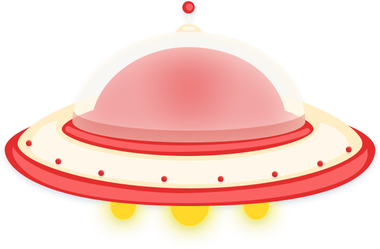
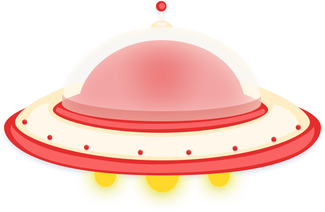

实验说明《竞赛模式》：
1、游戏说明：从地球上发射的飞船需要成功着落火星，飞船的轨迹是椭圆形，近日点在地球，远日点在火星。
2、在竞赛模式中，您有六次机会通过调节右侧变量，当飞船按照要求成功着落火星，即为挑战成功。
3、点击开始运动前，请先调好变量哦～
4、此页面结束后，请您进入《提交结论》写下您在本次实验中得出的实验结论。
5、不同星体的对应的left和top是指，他们在本页面中距离左边和上面界限的距离。
注：如果遇到页面中按钮点击不了的情况，请更换浏览器重新打开页面。（推荐chrome浏览器）